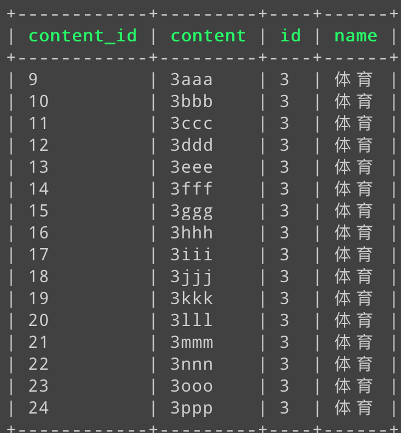
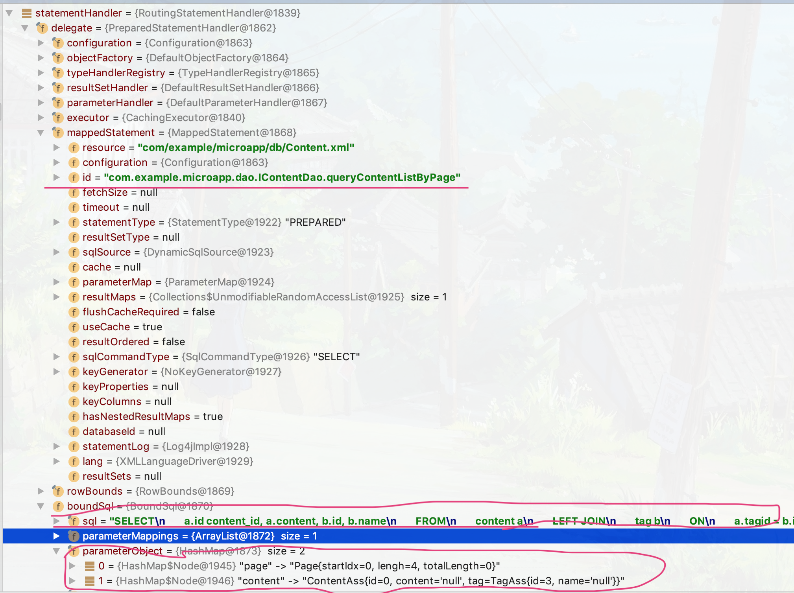
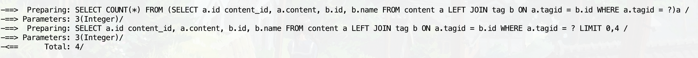
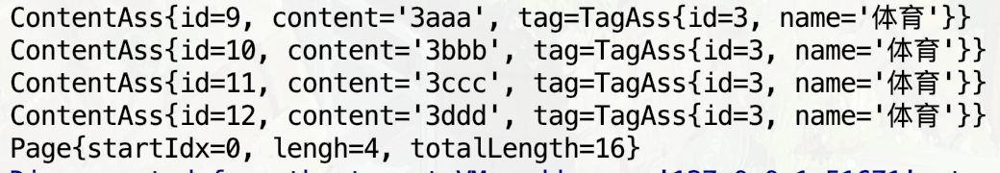

<!DOCTYPE html>
<html>
<head>
  <meta charset="utf-8">
  
  <title>学习笔记：javaEE基础-13-MyBatis分页式查询 | Schwarzeni&#39;s blog</title>
  <meta name="viewport" content="width=device-width, initial-scale=1, maximum-scale=1">
  <meta name="description" content="学习来源 通过自动回复机器人学Mybatis—加强版 使用MyBatis实现动态插入 LIMIT 至sql语句，进行分页数据的查询">
<meta name="keywords" content="总结,java,MyBatis">
<meta property="og:type" content="article">
<meta property="og:title" content="学习笔记：javaEE基础-13-MyBatis分页式查询">
<meta property="og:url" content="http://blog.schwarzeni.com/2019/01/12/学习笔记：javaEE基础-13-MyBatis分页式查询/index.html">
<meta property="og:site_name" content="Schwarzeni&#39;s blog">
<meta property="og:description" content="学习来源 通过自动回复机器人学Mybatis—加强版 使用MyBatis实现动态插入 LIMIT 至sql语句，进行分页数据的查询">
<meta property="og:locale" content="default">
<meta property="og:image" content="http://blog.schwarzeni.com/2019/01/12/学习笔记：javaEE基础-13-MyBatis分页式查询/image1.png">
<meta property="og:image" content="http://blog.schwarzeni.com/2019/01/12/学习笔记：javaEE基础-13-MyBatis分页式查询/image2.png">
<meta property="og:image" content="http://blog.schwarzeni.com/2019/01/12/学习笔记：javaEE基础-13-MyBatis分页式查询/image3.png">
<meta property="og:image" content="http://blog.schwarzeni.com/2019/01/12/学习笔记：javaEE基础-13-MyBatis分页式查询/image4.png">
<meta property="og:updated_time" content="2019-06-19T00:52:38.866Z">
<meta name="twitter:card" content="summary">
<meta name="twitter:title" content="学习笔记：javaEE基础-13-MyBatis分页式查询">
<meta name="twitter:description" content="学习来源 通过自动回复机器人学Mybatis—加强版 使用MyBatis实现动态插入 LIMIT 至sql语句，进行分页数据的查询">
<meta name="twitter:image" content="http://blog.schwarzeni.com/2019/01/12/学习笔记：javaEE基础-13-MyBatis分页式查询/image1.png">
  
    <link rel="alternate" href="/atom.xml" title="Schwarzeni&#39;s blog" type="application/atom+xml">
  
  
    <link rel="icon" href="/images/favicon.ico">
  
  
    <link href="//fonts.googleapis.com/css?family=Source+Code+Pro" rel="stylesheet" type="text/css">
  
  <link rel="stylesheet" href="/css/style.css">
  <!-- <link rel="stylesheet" href="/plugin/bganimation/bg.css"> -->
  

  <link rel="stylesheet" href="/third-party/powerful-sidebar-util/powerful-sidebar-util.css">

  <!-- add plugin for gittalk -->
  <link rel="stylesheet" href="/third-party/gittalk/gittalk.css" type="text/css">
</head>

<body>
	<style>
		.main-folder {
			width: 100%;
			height: 100%;
			position: absolute;
			background-image: url("/blog/images/folder-pic.jpg") ;
			background-size: 100%;
			z-index: 100;
	
		}
	</style>
			<!--<div id="container" style="display: none"> -->
		<!--	<div class="main-folder" id="main_folder"> -->
		<!--	</div> -->
	<div id="container">
    <div id="wrap" style="min-height:100%">
			<div class="outer">
        <div class="widget-wrap mobile-header">
  <h3 class="widget-title"></h3>
  <div class="widget">
    
    <h2 class="author">Schwarzeni</h2>
    <h3 class="description"></h3>
    <div class="count-box">
      <a href="/archives"><div><strong>187</strong><br>文章</div></a>
      <a href="/categories"><div><strong>7</strong><br>分类</div></a>
      <a href="/tags"><div><strong>64</strong><br>标签</div></a>
    </div>
    <ul class="blog-link">
     
          <a href="/" title="Home">
            <li>主页</li>
          </a>
        
          <a href="/archives" title="Archives">
            <li>归档</li>
          </a>
        
          <a href="/categories" title="Categories">
            <li>分类</li>
          </a>
        
          <a href="/tags" title="Tags">
            <li>标签</li>
          </a>
        
          <a href="/plans" title="足迹">
            <li>足迹</li>
          </a>
        
          <a href="/about" title="About">
            <li>关于</li>
          </a>
        
          <a href="/works/leetcode-binarytree-edit/" title="LC 二叉树">
            <li>LC 二叉树</li>
          </a>
        
    </ul>
  </div>
</div>

        <section id="main"><article id="post-学习笔记：javaEE基础-13-MyBatis分页式查询" class="wow slideInRight article article-type-post" itemscope itemprop="blogPost">
  <div class="article-meta">
    <a href="/2019/01/12/学习笔记：javaEE基础-13-MyBatis分页式查询/" class="article-date">
  <time class="post-time" datetime="2019-01-11T23:54:36.000Z" itemprop="datePublished">
    <span class="post-month">1月</span><br/>
    <span class="post-day">12</span>
  </time>
</a>

  </div>
  <div class="article-inner">
    
    
      <header class="article-header">
        
  
    <h1 class="article-title" itemprop="name">
      学习笔记：javaEE基础-13-MyBatis分页式查询
    </h1>
  

        <div>
          
  <div class="article-category">
    <a class="article-category-link" href="/categories/技术/">技术</a>
  </div>

          
              

          
        </div>
      </header>
    
    <div class="article-entry" itemprop="articleBody">
      
        <p>学习来源 <a href="https://www.imooc.com/learn/260" target="_blank" rel="noopener">通过自动回复机器人学Mybatis—加强版</a></p>
<p>使用MyBatis实现动态插入 <code>LIMIT</code> 至sql语句，进行分页数据的查询</p>
<a id="more"></a>
<hr>
<p>当一个项目中出现多个sql的<code>LIMIT</code>查询时就可以考虑是否可以将其封装一下，就传入对应的分段参数：起始index和长度，就可以了。这里可以用MyBatis的拦截器解决</p>
<p>在配置文件中写不带 <code>LIMIT</code> 的sql语句，但是规定，拦截器会拦截所有以 <code>ByPage</code> 结尾的id，根据调用dao方法时传入的分页参数为其添加 <code>LIMIT</code> 语句。</p>
<hr>
<h2 id="准备"><a href="#准备" class="headerlink" title="准备"></a>准备</h2><p>使用到表结构是前面 <code>学习笔记：javaEE基础10 MyBatis</code> 文章中使用的 <code>ContentAss</code>，java bean如下</p>
<figure class="highlight java"><table><tr><td class="gutter"><pre><span class="line">1</span><br><span class="line">2</span><br><span class="line">3</span><br><span class="line">4</span><br><span class="line">5</span><br><span class="line">6</span><br><span class="line">7</span><br></pre></td><td class="code"><pre><span class="line"><span class="keyword">package</span> com.example.microapp.bean;</span><br><span class="line"><span class="keyword">public</span> <span class="class"><span class="keyword">class</span> <span class="title">ContentAss</span> </span>&#123;</span><br><span class="line">    <span class="keyword">private</span> <span class="keyword">int</span> id;</span><br><span class="line">    <span class="keyword">private</span> String content;</span><br><span class="line">    <span class="keyword">private</span> TagAss tag;</span><br><span class="line">.......</span><br><span class="line">&#125;</span><br></pre></td></tr></table></figure>
<p>配置的查询语句如下，根据指定的tagid查询对应的content</p>
<figure class="highlight xml"><table><tr><td class="gutter"><pre><span class="line">1</span><br><span class="line">2</span><br><span class="line">3</span><br><span class="line">4</span><br><span class="line">5</span><br><span class="line">6</span><br><span class="line">7</span><br><span class="line">8</span><br><span class="line">9</span><br><span class="line">10</span><br><span class="line">11</span><br><span class="line">12</span><br><span class="line">13</span><br><span class="line">14</span><br><span class="line">15</span><br><span class="line">16</span><br><span class="line">17</span><br><span class="line">18</span><br><span class="line">19</span><br><span class="line">20</span><br><span class="line">21</span><br><span class="line">22</span><br><span class="line">23</span><br><span class="line">24</span><br><span class="line">25</span><br></pre></td><td class="code"><pre><span class="line">&lt;?xml version="1.0" encoding="UTF-8" ?&gt;</span><br><span class="line"><span class="meta">&lt;!DOCTYPE mapper</span></span><br><span class="line"><span class="meta">        PUBLIC "-//mybatis.org//DTD Mapper 3.0//EN"</span></span><br><span class="line"><span class="meta">        "http://mybatis.org/dtd/mybatis-3-mapper.dtd"&gt;</span></span><br><span class="line"></span><br><span class="line"><span class="tag">&lt;<span class="name">mapper</span> <span class="attr">namespace</span>=<span class="string">"com.example.microapp.dao.IContentDao"</span>&gt;</span></span><br><span class="line">    <span class="tag">&lt;<span class="name">resultMap</span> <span class="attr">id</span>=<span class="string">"ContentResultAss"</span> <span class="attr">type</span>=<span class="string">"com.example.microapp.bean.ContentAss"</span>&gt;</span></span><br><span class="line">        <span class="tag">&lt;<span class="name">id</span> <span class="attr">column</span>=<span class="string">"content_id"</span> <span class="attr">jdbcType</span>=<span class="string">"INTEGER"</span> <span class="attr">property</span>=<span class="string">"id"</span>/&gt;</span></span><br><span class="line">        <span class="tag">&lt;<span class="name">result</span> <span class="attr">column</span>=<span class="string">"content"</span> <span class="attr">jdbcType</span>=<span class="string">"VARCHAR"</span> <span class="attr">property</span>=<span class="string">"content"</span>/&gt;</span></span><br><span class="line">        <span class="tag">&lt;<span class="name">association</span> <span class="attr">property</span>=<span class="string">"tag"</span> <span class="attr">resultMap</span>=<span class="string">"Tag.TagAssResult"</span>/&gt;</span></span><br><span class="line">    <span class="tag">&lt;/<span class="name">resultMap</span>&gt;</span></span><br><span class="line">    <span class="tag">&lt;<span class="name">select</span> <span class="attr">id</span>=<span class="string">"queryContentListByPage"</span> <span class="attr">parameterType</span>=<span class="string">"java.util.Map"</span> <span class="attr">resultMap</span>=<span class="string">"ContentResultAss"</span>&gt;</span></span><br><span class="line">        SELECT</span><br><span class="line">        a.id content_id, a.content, b.id, b.name</span><br><span class="line">        FROM</span><br><span class="line">        content a</span><br><span class="line">        LEFT JOIN</span><br><span class="line">        tag b</span><br><span class="line">        ON</span><br><span class="line">        a.tagid = b.id</span><br><span class="line">        <span class="tag">&lt;<span class="name">where</span>&gt;</span></span><br><span class="line">            a.tagid = #&#123;content.tag.id&#125;</span><br><span class="line">        <span class="tag">&lt;/<span class="name">where</span>&gt;</span></span><br><span class="line">    <span class="tag">&lt;/<span class="name">select</span>&gt;</span></span><br><span class="line"><span class="tag">&lt;/<span class="name">mapper</span>&gt;</span></span><br></pre></td></tr></table></figure>
<p>如果tagid=3时，不加长度限制的话结果如下，太多了</p>
<p></p>
<hr>
<p>在包entity下建立一个Page类，专门存储分类信息</p>
<figure class="highlight java"><table><tr><td class="gutter"><pre><span class="line">1</span><br><span class="line">2</span><br><span class="line">3</span><br><span class="line">4</span><br><span class="line">5</span><br><span class="line">6</span><br><span class="line">7</span><br><span class="line">8</span><br><span class="line">9</span><br><span class="line">10</span><br><span class="line">11</span><br><span class="line">12</span><br><span class="line">13</span><br><span class="line">14</span><br><span class="line">15</span><br><span class="line">16</span><br><span class="line">17</span><br><span class="line">18</span><br></pre></td><td class="code"><pre><span class="line"><span class="keyword">package</span> com.example.microapp.entity;</span><br><span class="line"><span class="keyword">public</span> <span class="class"><span class="keyword">class</span> <span class="title">Page</span> </span>&#123;</span><br><span class="line">    <span class="comment">/**</span></span><br><span class="line"><span class="comment">     * 起始坐标</span></span><br><span class="line"><span class="comment">     */</span></span><br><span class="line">    <span class="keyword">private</span> <span class="keyword">int</span> startIdx;</span><br><span class="line"></span><br><span class="line">    <span class="comment">/**</span></span><br><span class="line"><span class="comment">     * 查询返回长度</span></span><br><span class="line"><span class="comment">     */</span></span><br><span class="line">    <span class="keyword">private</span> <span class="keyword">int</span> lengh;</span><br><span class="line"></span><br><span class="line">    <span class="comment">/**</span></span><br><span class="line"><span class="comment">     * 全部结果的总长度</span></span><br><span class="line"><span class="comment">     */</span></span><br><span class="line">    <span class="keyword">private</span> <span class="keyword">int</span> totalLength;</span><br><span class="line">......</span><br><span class="line">&#125;</span><br></pre></td></tr></table></figure>
<p>为了解决需要同时传入查询参数tagid和分页信息，但是MyBatis查询时只能传入一个参数的问题，可以将将他们都放入一个HashMap中，将那个HashMap作为参数传入</p>
<figure class="highlight java"><table><tr><td class="gutter"><pre><span class="line">1</span><br><span class="line">2</span><br><span class="line">3</span><br><span class="line">4</span><br><span class="line">5</span><br><span class="line">6</span><br><span class="line">7</span><br><span class="line">8</span><br><span class="line">9</span><br><span class="line">10</span><br><span class="line">11</span><br><span class="line">12</span><br><span class="line">13</span><br><span class="line">14</span><br><span class="line">15</span><br><span class="line">16</span><br><span class="line">17</span><br><span class="line">18</span><br><span class="line">19</span><br><span class="line">20</span><br><span class="line">21</span><br><span class="line">22</span><br><span class="line">23</span><br><span class="line">24</span><br></pre></td><td class="code"><pre><span class="line"><span class="meta">@Test</span></span><br><span class="line"><span class="function"><span class="keyword">public</span> <span class="keyword">void</span> <span class="title">queryContentListByPage</span><span class="params">()</span> <span class="keyword">throws</span> Exception </span>&#123;</span><br><span class="line">    Map&lt;String, Object&gt; map = <span class="keyword">new</span> HashMap&lt;&gt;();</span><br><span class="line">    ContentAss content = <span class="keyword">new</span> ContentAss();</span><br><span class="line"></span><br><span class="line">    <span class="comment">// 设置分页信息,起始坐标为0，长度为4</span></span><br><span class="line">    Page page = <span class="keyword">new</span> Page();</span><br><span class="line">    page.setStartIdx(<span class="number">0</span>);</span><br><span class="line">    page.setLengh(<span class="number">4</span>);</span><br><span class="line"></span><br><span class="line">    <span class="comment">// 设置tagid信息</span></span><br><span class="line">    TagAss tag = <span class="keyword">new</span> TagAss();</span><br><span class="line">    tag.setId(<span class="number">3</span>);</span><br><span class="line">    content.setTag(tag);</span><br><span class="line">    map.put(<span class="string">"content"</span>, content);</span><br><span class="line">    map.put(<span class="string">"page"</span>, page);</span><br><span class="line"></span><br><span class="line">    <span class="comment">// 将map作为参数传入</span></span><br><span class="line">    List&lt;ContentAss&gt; resultList= ContentDaoImpl.getInstance().queryContentListByPage(map);</span><br><span class="line">    resultList.forEach((v) -&gt; &#123;</span><br><span class="line">        System.out.println(v);</span><br><span class="line">    &#125;);</span><br><span class="line">    System.out.println(page);</span><br><span class="line">&#125;</span><br></pre></td></tr></table></figure>
<hr>
<h2 id="编写拦截器"><a href="#编写拦截器" class="headerlink" title="编写拦截器"></a>编写拦截器</h2><p>基础配置过程和前一篇文章一样：实现 <code>Interceptor</code> 接口，在主配置文件中注册，这里就不再写了；下面为实现的分页拦截器</p>
<figure class="highlight java"><table><tr><td class="gutter"><pre><span class="line">1</span><br><span class="line">2</span><br><span class="line">3</span><br><span class="line">4</span><br><span class="line">5</span><br><span class="line">6</span><br><span class="line">7</span><br><span class="line">8</span><br><span class="line">9</span><br><span class="line">10</span><br><span class="line">11</span><br><span class="line">12</span><br><span class="line">13</span><br><span class="line">14</span><br><span class="line">15</span><br><span class="line">16</span><br><span class="line">17</span><br><span class="line">18</span><br><span class="line">19</span><br><span class="line">20</span><br><span class="line">21</span><br><span class="line">22</span><br><span class="line">23</span><br><span class="line">24</span><br><span class="line">25</span><br><span class="line">26</span><br><span class="line">27</span><br><span class="line">28</span><br><span class="line">29</span><br><span class="line">30</span><br><span class="line">31</span><br><span class="line">32</span><br><span class="line">33</span><br><span class="line">34</span><br><span class="line">35</span><br><span class="line">36</span><br><span class="line">37</span><br><span class="line">38</span><br><span class="line">39</span><br><span class="line">40</span><br><span class="line">41</span><br><span class="line">42</span><br><span class="line">43</span><br><span class="line">44</span><br><span class="line">45</span><br><span class="line">46</span><br><span class="line">47</span><br><span class="line">48</span><br><span class="line">49</span><br><span class="line">50</span><br><span class="line">51</span><br><span class="line">52</span><br><span class="line">53</span><br><span class="line">54</span><br><span class="line">55</span><br></pre></td><td class="code"><pre><span class="line"><span class="meta">@Intercepts</span>(<span class="meta">@Signature</span>(type = StatementHandler.class, method = <span class="string">"prepare"</span>, args =&#123;Connection.class, Integer.class&#125; ))</span><br><span class="line"><span class="keyword">public</span> <span class="class"><span class="keyword">class</span> <span class="title">ExamplePlugin</span> <span class="keyword">implements</span> <span class="title">Interceptor</span></span>&#123;</span><br><span class="line">    <span class="meta">@Override</span></span><br><span class="line">    <span class="function"><span class="keyword">public</span> Object <span class="title">intercept</span><span class="params">(Invocation invocation)</span> <span class="keyword">throws</span> Throwable </span>&#123;</span><br><span class="line">        StatementHandler statementHandler = (StatementHandler)invocation.getTarget();</span><br><span class="line">        </span><br><span class="line">        <span class="comment">// 实例化metaObject，便于获得statementHandler中的mappedStatement</span></span><br><span class="line">        MetaObject metaObject = MetaObject.forObject(statementHandler, SystemMetaObject.DEFAULT_OBJECT_FACTORY, SystemMetaObject.DEFAULT_OBJECT_WRAPPER_FACTORY, <span class="keyword">new</span> DefaultReflectorFactory());</span><br><span class="line"></span><br><span class="line">        <span class="comment">// 获取statementHandler中的值</span></span><br><span class="line">        MappedStatement mappedStatement = (MappedStatement)metaObject.getValue(<span class="string">"delegate.mappedStatement"</span>);</span><br><span class="line">        String id = mappedStatement.getId();</span><br><span class="line"></span><br><span class="line">        <span class="comment">// 判断当前sql语句是否要进行处理</span></span><br><span class="line">        <span class="keyword">if</span>(id.matches(<span class="string">".+ByPage$"</span>)) &#123;</span><br><span class="line">            <span class="comment">// 获取解析的sql数据</span></span><br><span class="line">            BoundSql boundSql = statementHandler.getBoundSql();</span><br><span class="line">            <span class="comment">// 原始的SQL语句</span></span><br><span class="line">            String sql = boundSql.getSql();</span><br><span class="line"></span><br><span class="line"></span><br><span class="line">            <span class="comment">// 获取Connection对象，以便进行sql操作</span></span><br><span class="line">            Connection connection = (Connection)invocation.getArgs()[<span class="number">0</span>];</span><br><span class="line">            <span class="comment">// 查询全部数据的总长度</span></span><br><span class="line">            String countSql = <span class="string">"SELECT COUNT(*) FROM ("</span> + sql + <span class="string">")a"</span>;</span><br><span class="line">            PreparedStatement countStatement = connection.prepareStatement(countSql);</span><br><span class="line">            ParameterHandler parameterHandler = (ParameterHandler)metaObject.getValue(<span class="string">"delegate.parameterHandler"</span>);</span><br><span class="line">            <span class="comment">// 装载参数，使其可以执行</span></span><br><span class="line">            parameterHandler.setParameters(countStatement);</span><br><span class="line">            ResultSet rs = countStatement.executeQuery();</span><br><span class="line">            Map&lt;?,?&gt; parameter = (Map&lt;?,?&gt;)boundSql.getParameterObject();</span><br><span class="line">            Page page = (Page)parameter.get(<span class="string">"page"</span>);</span><br><span class="line">            <span class="keyword">if</span>(rs.next()) &#123;</span><br><span class="line">                <span class="comment">// 设置查询好的总长度</span></span><br><span class="line">                page.setTotalLength(rs.getInt(<span class="number">1</span>));</span><br><span class="line">            &#125;</span><br><span class="line"></span><br><span class="line">            <span class="comment">// 改造后带分页查询的SQL语句</span></span><br><span class="line">            String pageSql = sql + <span class="string">" LIMIT "</span> + page.getStartIdx() + <span class="string">","</span> + page.getLengh();</span><br><span class="line">            metaObject.setValue(<span class="string">"delegate.boundSql.sql"</span>, pageSql);</span><br><span class="line">        &#125;</span><br><span class="line">        Object result = invocation.proceed();</span><br><span class="line">        <span class="keyword">return</span> result;</span><br><span class="line">    &#125;</span><br><span class="line"></span><br><span class="line">    <span class="meta">@Override</span></span><br><span class="line">    <span class="function"><span class="keyword">public</span> Object <span class="title">plugin</span><span class="params">(Object target)</span> </span>&#123;</span><br><span class="line">        <span class="keyword">return</span> Plugin.wrap(target, <span class="keyword">this</span>);</span><br><span class="line">    &#125;</span><br><span class="line"></span><br><span class="line">    <span class="meta">@Override</span></span><br><span class="line">    <span class="function"><span class="keyword">public</span> <span class="keyword">void</span> <span class="title">setProperties</span><span class="params">(Properties properties)</span> </span>&#123;</span><br><span class="line"></span><br><span class="line">    &#125;</span><br><span class="line">&#125;</span><br></pre></td></tr></table></figure>
<p>要实现动态插入 <code>LIMIT</code>，首先要获取当前sql的id以判断是否为需要处理的sql语句，其次要获得传入的sql语句，最后还需要查询总的数据长度赋给Page的totalLength属性，这里就需要使用到 <code>MetaObject</code> 对象了。</p>
<p>第一行已经通过 <code>invocation.getTarget()</code> 获得了实现了 <code>StatementHandler</code> 接口的 <code>RoutingStatementHandler</code>，从调试信息可以看出，这里里面就有需要的id号，sql语句以及传入的参数</p>
<p></p>
<p>但是，delegate是私有属性，只能通过 <code>MetaObject</code> 获得</p>
<figure class="highlight java"><table><tr><td class="gutter"><pre><span class="line">1</span><br><span class="line">2</span><br><span class="line">3</span><br><span class="line">4</span><br></pre></td><td class="code"><pre><span class="line"><span class="comment">//....</span></span><br><span class="line"> MetaObject metaObject = MetaObject.forObject(statementHandler, SystemMetaObject.DEFAULT_OBJECT_FACTORY,SystemMetaObject.DEFAULT_OBJECT_WRAPPER_FACTORY, <span class="keyword">new</span> DefaultReflectorFactory());</span><br><span class="line"><span class="comment">// 获取statementHandler中的值</span></span><br><span class="line">MappedStatement mappedStatement = (MappedStatement)metaObject.getValue(<span class="string">"delegate.mappedStatement"</span>);</span><br></pre></td></tr></table></figure>
<p>接下来就好办了，所有需要的值都可以取到</p>
<p>这样子就可以根据获取的id名判断当前sql语句是否需要修改了，但是如果要进行sql查询的话还需要得到 <code>java.sql.Connection</code>；在之前的注解中第三个参数里已经传入了 <code>Connection</code> 类了，所以这里只需要用过 <code>invocation.getArgs()[0]</code> 取到，再做一个类型转换就可以了；后面的就比较好理解了，普通的JDBC代码</p>
<p></p>
<p>第一个sql语句就是拦截器中的查询总长度的sql语句，第三行就是经过拦截器处理过的sql语句，语句最后加上了<code>LIMIT</code>；最终结果如下</p>
<p></p>

      
    </div>
    <footer class="article-footer">
      <a data-url="http://blog.schwarzeni.com/2019/01/12/学习笔记：javaEE基础-13-MyBatis分页式查询/" data-id="ckuang94e00d4r1vgq8hcidnf" class="article-share-link">Share</a>
      
      
  <ul class="article-tag-list"><li class="article-tag-list-item"><a class="article-tag-list-link" href="/tags/MyBatis/">MyBatis</a></li><li class="article-tag-list-item"><a class="article-tag-list-link" href="/tags/java/">java</a></li><li class="article-tag-list-item"><a class="article-tag-list-link" href="/tags/总结/">总结</a></li></ul>

    </footer>
  </div>
  
    
<nav id="article-nav">
  
    <a href="/2019/01/12/学习笔记-Spring基础1-Bean/" id="article-nav-newer" class="article-nav-link-wrap">
      <strong class="article-nav-caption">Newer</strong>
      <div class="article-nav-title">
        
          学习笔记: Spring基础1 Bean
        
      </div>
    </a>
  
  
    <a href="/2019/01/11/学习笔记：javaEE基础-12-MyBatis拦截器/" id="article-nav-older" class="article-nav-link-wrap">
      <strong class="article-nav-caption">Older</strong>
      <div class="article-nav-title">学习笔记：javaEE基础-12-MyBatis拦截器</div>
    </a>
  
</nav>

  
  
    
    <script src="/third-party/gittalk/gittalk.min.js"></script>
    <script src="/third-party/gittalk/md5.min.js"></script>
    <div id="gitalk-container"></div>
    <script>
    var gitalk = new Gitalk({
      clientID: '18bc624fc12c1f06fdd3',
      clientSecret: '3f7d7806ef813726f3f930b554f3ed5a12af9a25',
      repo: 'schwarzeni.comment.github.io',
      owner: 'schwarzeni',
      admin: ['schwarzeni'],
      id: md5(location.pathname),      // Ensure uniqueness and length less than 50
      distractionFreeMode: false  // Facebook-like distraction free mode
    })

    gitalk.render('gitalk-container')
    </script>
    
</article>


</section>
        
          <aside id="sidebar">
  
    <div class="widget-wrap">
  <h3 class="widget-title"></h3>
  <div class="widget">
    <h1 class="blog-title">Schwarzeni&#39;s blog</h1>
    <h2 class="blog-subtitle">Welcome to my secret garden</h2>
    <ul class="blog-link">
     
          <a href="/" title="Home">
            <li>主页</li>
          </a>
        
          <a href="/archives" title="Archives">
            <li>归档</li>
          </a>
        
          <a href="/categories" title="Categories">
            <li>分类</li>
          </a>
        
          <a href="/tags" title="Tags">
            <li>标签</li>
          </a>
        
          <a href="/plans" title="足迹">
            <li>足迹</li>
          </a>
        
          <a href="/about" title="About">
            <li>关于</li>
          </a>
        
          <a href="/works/leetcode-binarytree-edit/" title="LC 二叉树">
            <li>LC 二叉树</li>
          </a>
        
    </ul>
  </div>
</div>

  
    <div class="widget-wrap">
  <h3 class="widget-title"></h3>
  <div class="widget">
    
    <h2 class="author">Schwarzeni</h2>
    <h3 class="description"></h3>
    <div class="count-box">
      <a href="/archives"><div><strong>187</strong><br>文章</div></a>
      <a href="/categories"><div><strong>7</strong><br>分类</div></a>
      <a href="/tags"><div><strong>64</strong><br>标签</div></a>
    </div>


    <div class="social-link">
      
        <a class="hvr-bounce-in" href="http://github.com/schwarzeni" target="_blank" title="Github">
          Github
        </a>
      
        <a class="hvr-bounce-in" href="https://space.bilibili.com/21884414" target="_blank" title="Bilibili">
          Bilibili
        </a>
      
        <a class="hvr-bounce-in" href="https://music.163.com/#/user/home?id=259848766" target="_blank" title="网易云音乐">
          网易云音乐
        </a>
      
        <a class="hvr-bounce-in" href="https://bangumi.tv/user/547268" target="_blank" title="Bangumi">
          Bangumi
        </a>
      
    </div>

    <div class="friend-link">
      <h2>友情链接</h2>
      
        <a class="hvr-bounce-in" href="https://blog.csdn.net/nzyalj" target="_blank" title="旧博客">
          旧博客
        </a>
      
        <a class="hvr-bounce-in" href="https://zybtree.github.io/" target="_blank" title="斌哥哥">
          斌哥哥
        </a>
      
        <a class="hvr-bounce-in" href="https://www.zhoujianguo.ltd/" target="_blank" title="国哥哥">
          国哥哥
        </a>
      
        <a class="hvr-bounce-in" href="https://blog.yanqing-wu.com/" target="_blank" title="pwyq">
          pwyq
        </a>
      
        <a class="hvr-bounce-in" href="https://qwqaq.com/" target="_blank" title="QWQAQ">
          QWQAQ
        </a>
      
        <a class="hvr-bounce-in" href="https://geektutu.com/" target="_blank" title="极客兔兔">
          极客兔兔
        </a>
      
        <a class="hvr-bounce-in" href="https://hj24.life/" target="_blank" title="hj24">
          hj24
        </a>
      
    </div>
  </div>
</div>

  
</aside>

        
      </div>
      
    </div>
    

<script src="/third-party/wow/jquery.min.js"></script>
<script src="/third-party/wow/wow.min.js"></script>
<script>
new WOW().init();
</script>
<!-- 修改浮动小按钮 -->
<script src="/third-party/powerful-sidebar-util/lib/axios.min.js"></script>
<script src="/third-party/powerful-sidebar-util/powerful-sidebar-util.js"></script>


  <link rel="stylesheet" href="/plugin/fancybox/jquery.fancybox.css">
  <script src="/plugin/fancybox/jquery.fancybox.pack.js"></script>


  <link rel="stylesheet" href="/plugin/galmenu/GalMenu.css">
  <script src="/plugin/galmenu/GalMenu.js"></script>
  <div class="GalMenu GalDropDown">
      <div class="circle" id="gal">
        <div class="ring">
          
            <a href="/" title="" class="menuItem">首页</a>
          
            <a href="/tags" title="" class="menuItem">标签</a>
          
            <a href="/categories" title="" class="menuItem">分类</a>
          
            <a href="/archives" title="" class="menuItem">归档</a>
          
            <a href="/about" title="" class="menuItem">关于</a>
          
        </div>
        
          <audio id="audio" src="#"></audio>
        
      </div> 
</div>
<div id="overlay" style="opacity: 1; cursor: pointer;"></div>
  <script type="text/javascript">var items = document.querySelectorAll('.menuItem');
    for (var i = 0,
    l = items.length; i < l; i++) {
      items[i].style.left = (50 - 35 * Math.cos( - 0.5 * Math.PI - 2 * (1 / l) * i * Math.PI)).toFixed(4) + "%";
      items[i].style.top = (50 + 35 * Math.sin( - 0.5 * Math.PI - 2 * (1 / l) * i * Math.PI)).toFixed(4) + "%"
    }</script>
<script type="text/javascript">
  $(document).ready(function() {
    $('body').GalMenu({
      'menu': 'GalDropDown'
    })
  });
</script>

  <!-- <section class="hidden-xs"> 
  <ul class="cb-slideshow"> 
    <li><span>我</span></li> 
    <li><span>永</span></li> 
    <li><span>远</span></li> 
    <li><span>喜</span></li> 
    <li><span>欢</span></li> 
    <li><span>02</span></li> 
  </ul>
</section> -->

<script src="/js/script.js"></script>


<!-- Global site tag (gtag.js) - Google Analytics -->
<script async src="https://www.googletagmanager.com/gtag/js?id=UA-155992609-1"></script>
<script>
  window.dataLayer = window.dataLayer || [];
  function gtag(){dataLayer.push(arguments);}
  gtag('js', new Date());

  gtag('config', 'UA-155992609-1');
</script>


<script type="text/x-mathjax-config">
  MathJax.Hub.Config({
    tex2jax: {
      inlineMath: [ ['$','$'], ["\\(","\\)"] ],
      processEscapes: true
    }
  });
</script>

<script src='https://cdnjs.cloudflare.com/ajax/libs/mathjax/2.7.5/latest.js?config=TeX-MML-AM_CHTML' async></script>


  </div>
	<script>
	/*
		var host = "localhost:4000"
		var mainPageUrl = "http://" + host +"/blog";
		var $folder = document.getElementById('main_folder');
		var $main = document.getElementById('wrap');
		var $container = document.getElementById('container');
		if ( document.referrer.includes(host) || !(window.location.href === mainPageUrl || window.location.href === mainPageUrl + "/")) {
			$folder.style.display = "none";	
		} else {
			$main.style.display = "none";
		}
		$container.style = "";
		document.getElementById('go_to_main_page').onclick = function() {
			$folder.style.display = "none";	
			$main.style = "";
		}
*/
	</script>
</body>
</html>
